RTR: Imperium Surrectum
RTR: Imperium SurrectumThe early Roman Republic army
2026-05-23 · jottel

Hello everyone and welcome to a new Developer Diary. We know, you are all very excited to see an update on the Romans, and today we’re going to deliver you a showcase of the early Republican units. So, like in our faction Dev Diaries, let’s start out with a little history:
The early Roman army is steeped in mystery and controversy, since the very first Roman historian, Quintus Fabius Pictor, wrote only in the second half of the 3rd century BC, and his work did not even survive besides as a source for later ancient historians. Thus, we cannot actually be sure of anything that happened before that period. When talking about the Roman army of the Republic then, everyone will tend to cite the account of Polybios of Megalopolis (ca. 200 – 120 BC), who as a Greek hostage in Rome, got to experience the Roman legion in action first-hand, could ask his patrons questions about it, and describe it from a “foreign” point of view. This means that he did not take much for granted but instead had to explain all the intricacies and details for readers who were not very familiar with the Roman political and military system. This makes for an incredibly useful source.
However, we don’t have that luxury for anything before that. The sources for the earlier Roman history had to be taken from inscriptions, buildings and statues, yearly temple records, letters and reports from campaigns, triumphal lists, random titbits of local or Greek history here and there, and most of all, the very questionable annals of Roman families, often glorifying their own past. Titus Livius (ca. 59 BC – 17 AD), a historian of the Augustan period, wrote a long history from the founding of Rome (*ab urbe condita*, 753 BC) until his own time, having to rely on all of these sources and the Roman historiography from Q. Fabius Pictor onward. Especially the early history led to a lot of frustration with his sources, as expressed in the prologue of book 6 (chapter 1):
“*The subject matter is enveloped in obscurity; partly from its great antiquity, like remote objects which are hardly discernible through the vastness of the distance; partly owing to the fact that written records, which form the only trustworthy memorials of events, were in those times few and scanty, and even what did exist in the pontifical commentaries and public and private archives nearly all perished in the conflagration of the City.*”
This problem was often encountered, especially when it came to the people who were involved in specific events. Thus, concerning the election of a dictator in 361 BC, he writes:
“*It is generally understood that T. Quinctius Pennus was the Dictator and Ser. Cornelius Maluginensis the Master of the horse. According to Licinius Macer, the Dictator was nominated by the consul Licinius. […] Licinius Macer's desire to appropriate the credit of this to his house (the Licinii) lessens the weight of his authority. As I find no mention of this in the older annalists, I am more inclined to believe that it was the prospect of a Gaulish war which was the immediate cause why a Dictator was nominated.*”
Why is this important for our early units? Because Livy, too, gives a description of the early army in book 8, chapter 8. It is digression from a battle set at Mount Vesuvius in 340 BC, during the Latin War (340-338 BC), between the Romans and the Latins, both fielding identical armies. Thus, set in the 4th century BC, we don’t know his sources and especially not their reliability. To call this army description controversial (as I did earlier), is honestly underselling it. The math does not make sense, it is at times confusingly phrased and possibly corrupted by our Medieval authors transcribing it and there have been various attempts to restore it or get the numbers to “add up” (Oakley, A Commentary on Livy Books VI-X (1998), p. 461-463; Armstrong, Organized Chaos (2020), p. 85). Frustration about this has been shown as early as 1670, where the Scottish author and soldier James Turner wrote:
“*Titus Livius […] marshals the Roman Legion in such a confused way, that he is not at all intelligible; and hath given just reason to both Learned and Military men, to think that place is corrupt, and a sense made of it, never intended by the author*” (James Turner, Pallas Armata (1670), p. 84).
Since then, this problem has not really been solved and generations of scholarship alter between accepting it with some concessions or alterations, using it to complement Polybios or outright dismissing it. There are, however, some significant differences between the description of the army of 340 BC and the Polybian army of ca. 160s-140s BC, which is why we implemented it, supplementing it with other source mentions, thus taking the optimistic path.
In the broad structure, the early Roman Republican army is exactly as you know it: It is led by a consul or praetor, made up of ca. 4.000 – 5.000 men, exactly 300 Roman equites (cavalrymen) and the heavy infantry is split between hastati (the youngest), principes (in the prime of their lives) and triarii (the oldest), the rest of the numbers filled up with light infantry. The biggest difference in terms of unit types concerns the light infantry.
There are 20 leves attached to each maniple of heavy infantry and contrary to the “scutati”, they are only armed with spears and javelins (“hastam tanum gaesaque gererent”, Liv. VIII.8.5). In most other passages, leves appear as “levis armaturae”, a broad Latin term referring to light infantry in general, comparable to the Greek “psiloi”, and fulfilling the functions expected of light-armed infantry: skirmishing, fighting against elephants, and covering heavy infantry deployments (Anders, Roman Light Infantry and The Art of Combat (2011), p. 55). Though they are sometimes equated to the velites, in Livy’s narrative, the (shielded) velites are “invented” during the siege of Capua 211 BC, as a picked group of skirmishers that works in tandem with the cavalry (Liv. XXVI.4.4-10). By the time of Polybios’ writing, the velites make up the entirety of the Roman light infantry. However, Polybios, in most of his pre-book 6 narrative, consistently refers to the Roman light infantry as “(pez)akontistai” (i.e. (foot-)javelinmen: II.30; III.65; III.69; III.72-73; III.110). He explains the velites (= “grosphomachoi”) in his digression on the Roman army of his time in book 6 (VI.21-22) and then starts reliably mentioning their presence in the Roman army from X.15.10 (the siege of Carthago Nova, 209 BC) onward, conveniently after 211 BC. It is thus not entirely unlikely that the leves (in the sense of simple “javelinmen”) made up a significant part the Roman light infantry until the 2nd Punic War.
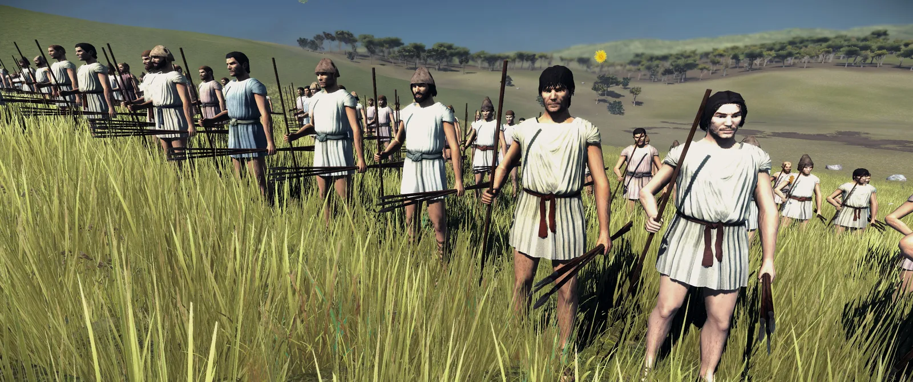
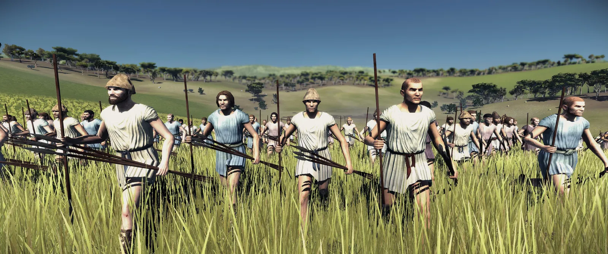
Livy puts the rorarii under their own flag (vexillum) in the last line with the triarii and accensi (Liv. VIII.8.8). In the battle at Mount Vesuvius 340 BC, the rorarii, presumably after initiating the battle, reinforce the losing hastati and principes. Beyond this, not much is known about them compared to other Roman soldier types. Marcus Terentius Varro (116-27 BC), who is still aware of the term in the 1st century BC, gives the following origin of the name rorarii: “*Rorarii were those who started the battle, named from the 'dew-drop' (ros) because it ‘sprinkles' (rorat) before it really rains.*” (Varr. Ling. Lat. VII.58). An etymology was given by Gaius Lucilius (ca. 180 BC-103 BC) which says that rorarii are “*the soldiers who, before the battle lines had come together, would begin the fight with a few javelins at first; the name drawn from the fact that before the heaviest rains the sky begins to drizzle [rorare]. … five spears, a rorarius veles with a golden belt.*” (Non. 552/Lucil. VII.323). Confirming their position outside of the skirmishing phase he writes: “*Behind those in soldier’s cloaks was standing the swift rorarius*” (X.391). The most likely interpretation of the sources is that the rorarii were attached to the vexilla of the triarii as the leves were to the manipuli of hastati (and principes). They are armed with javelins and a small round shield, somewhat smaller than the one carried by the velites (Pol. VI.22.2; Liv. 38.21) as depicted on a bronze figurine from Rome (Museo Nazionale di Villa Giulia, inv. no. 24497, in: Taylor, Etruscan Identity and Service in the Roman Army (2017), p. 287). This gives them a small chance to hold their own in close combat.
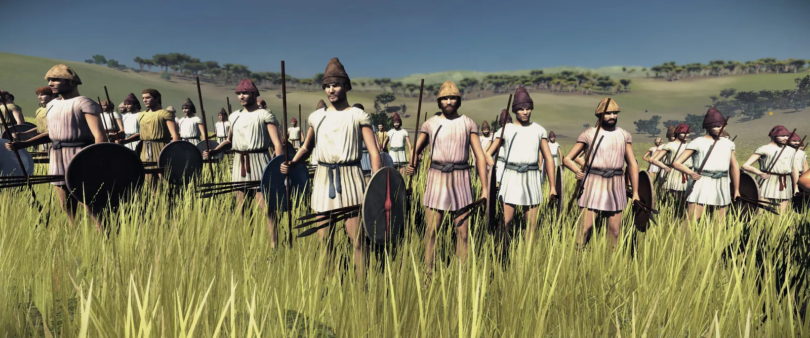
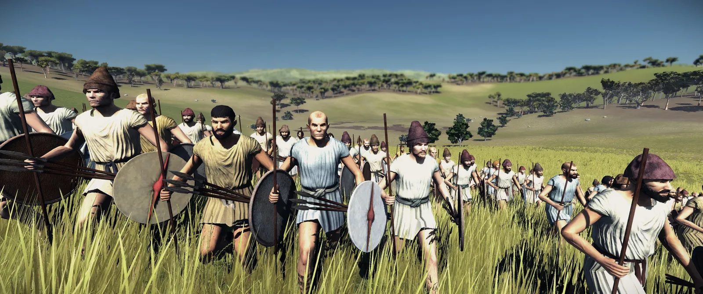
Funditores (the Latin word for 'slingers') are a low-tier skirmisher unit. In the Roman military, the sling appears in Livy’s and Dionysios’ description of the centuriate order of Servius Tullius (ca. 578-534 BC) (Liv. I.43.7: Dion. Hal. IV.17.2). The fifth class was the lowest of those liable to military service, estimated at a worth of 11.000 aera (Roman bronze coins). They were in the same class as the cornicen and tubicen - horn and trumpet players (Liv. I.43.7) and were positioned outside of the heavy infantry battleline (Dion. Hal. IV.17.2). At this point, I should mention the reason for the exclusion of the accensi. The common view, based on other sources, is that the accensi were not part of the fighters but something akin to attendants or servants, attached to the triarii outside of a battlefield situation (on the accensi, see: Rawlings, Army and Battle During the Conquest of Italy (2007), p. 57; Anders, Roman Light Infantry and the Art of Combat (2011), p. 8-13).
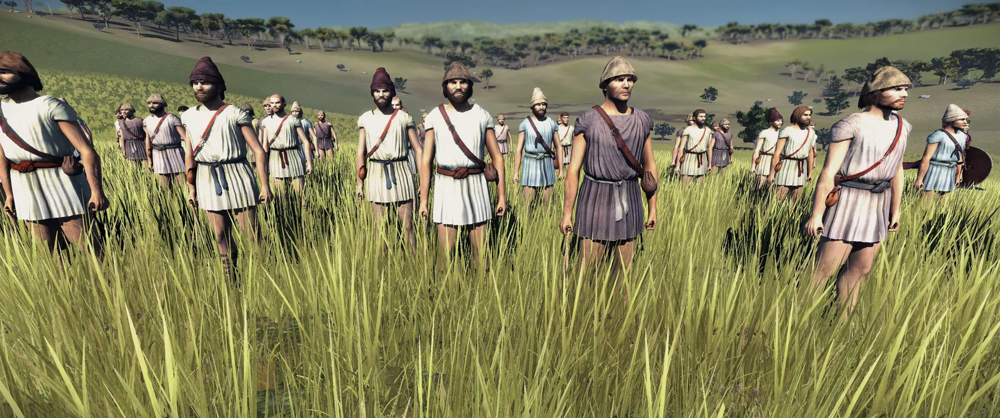
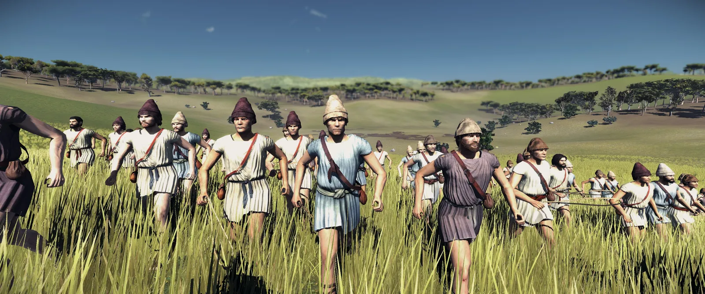
The hastati have their first appearance during the 4th century BC. In 350 BC, a battle at an unknown site in Latium took place, where the Gauls attacked a Roman position on the hill. The triarii were fortifying the place while the hastati and principes were guarding the works and threw their pila and spears (“pila omnia hastaeque”) at the Gallic charge (Liv. VII.23.7). After that episode, these individual sections of the Roman army make more regular appearances. Varro in the Lingua Latina says that the term “hastati” derives from the hastae, which can very directly be translated as “spears” (V.89). It is not unlikely that they were initially armed with a multipurpose spear that could be used for close combat and as a projectile. Ennius in the early 2nd century writes “the hastati threw their hastae, an iron down-pour came” (Macrobius 6.1.52 = Ennius, Ann. 8. frg. 281; Rawlings, Army and Battle During the Conquest of Italy (2007), p. 57). Livy doesn’t detail the hastati’s equipment beyond them being “scutati”, i.e. scutum-bearers. Of course, we gave them the iconic bronze Montefortino-type helmet with three feathers which had become the most popular helmet in Italy by the turn of the 4th to the 3rd century BC (Paddock, The Bronze Italian Helmet, Vol. 2 (1993), p. 469). At this time, a sort of equipment standardization had taken place throughout Italy, and many soldiers are depicted armed with spears, Montefortino-type helmets, oval scuta and swords (occasionally greaves) from Etruria in the north to Magna Graecia in the south. Our early hastati, as the lowest heavy infantry class, represent this equipment standardization.
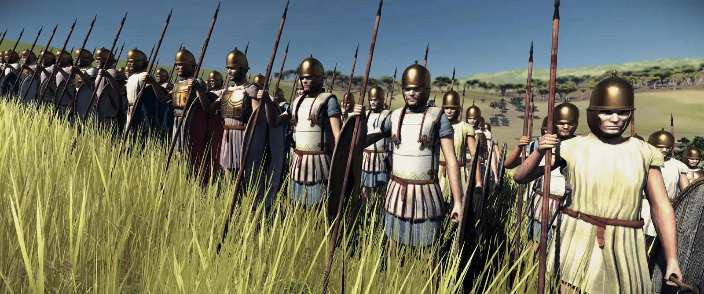
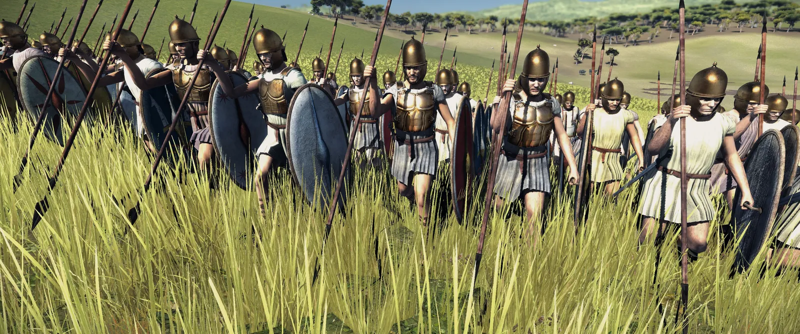
The principes traditionally made up the second line in the Roman Republican manipular order (10 “speirai” in Pol. VI.21.7; 15 “manipuli” in Liv. VIII.8.6), positioned behind the intervals left between the manipuli (i.e. companies) of the hastati. While the principes of Polybios’ time are armed in the same manner as the hastati (Pol. VI.23.16), in Livy’s early account, they have the most magnificent arms (“insignibus maxime armis” Liv. VIII.8.6). This reinforces the suggestion that the principes used to be understood as the “main line” of the Roman legion. Like the hastati, they carry the scutum, which still resembles the Gallic flat oval shield in the early 3rd century BC (see. Aes Signatum (bronze ingot), dated to 280-250 BC, depicting an oval shield: British Museum Collection: 1867,0212.3). In terms of armour, they wear bronze muscle cuirasses, bronze pectoral armour and linothorakes, which were very common in Latium and Campania in the 4th to early 3rd century BC (see: Burns, The Cultural and Military Significance of the South Italic Warior's Panoply (2006), p. 307-322). Their helmets are of the popular Montefortino type, decorated with triple-feather crests, as described by Polybios (VI.23.12) and shown on reliefs or preserved in archaeological findings (Galluccio, Glu Elmi di Tipo Montefortino con Decorazioni apicali dal Mare di Sicilia (2023)). Besides the famous pilum (javelin), they are armed with Celtic double-edged swords of the La-Tène type, which were probably the predecessors of the famous gladius hispaniensis. One, dated to the 4th century BC, has been found at San Vittore in Lazio, inscribed with "Tr[ebonius] Pomponius, (son of) Gaius, made (m)e in Rome" (Taylor, Panoply and Identity during the Roman Republic (2020), p. 36).
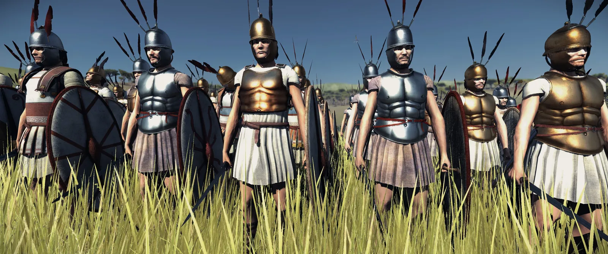
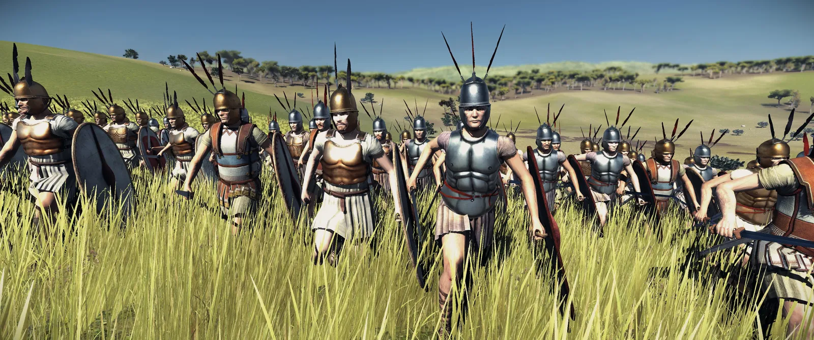
The triarii constitute the third line (acies) in the Roman legion.The triarii were also called “pilani”, making the formations of hastati and principes the “antepilani” (“in front of the pilani” Liv. VIII.8.7-8). Their task was to kneel on their right legs, waiting for their turn in battle, the spears put into the earth like they were forming a palisade (Liv. VIII.8.10). If both hastati and principes had been routed, it “came to the triarii”, which was a proverb for an ensuing crisis (Liv. VIII.8.11: “inde rem ad triarios redisse”). After letting hastati and principes pass between the vexilla’s spaces, they’d close the ranks and throw themselves at the enemy as fresh reserves. Plautus (fragment in Varro), however has the following to say about them: “*Come now, everyone sit on the periphery, just like triarii*” (Frivolaria frg. 5 Ritschl. = Varro Ling. Lat. V.89). This jab demonstrates that, even though everyone could expect the triarii to save the day in a crisis, in most battles, they did not have much to do, besides sitting around. The triarii are the only type of heavy infantry that appears before the manipular reform in the 4th century BC, though in their old role they were seemingly camp guards (Dion. Hal. V.15.4; VIII.86.4; Liv. II.47.5-8; IV.19.8). Concerning their equipment, they also ditched the aspis shield for the scutum (oblong oval shield) behind which they knelt (Liv. VIII.8.10: “Triarii […] scuta innixa umeris). Their helmets, besides the popular Montefortino type, are a bit old-fashioned and more individualistic, reminiscent of Etruscan, Latin and Campanian findings and depictions of Italo-Phrygian and Italo-Chalcidian helmets (mirror from Praeneste, Royal Ontario Museum, Inv. 928.48.3; Tomba 1, Nola-Casamarciano; Amazonomachy sarcophagus of Ramtha Huzcnai of Tarquinia, Firenze, Museo Archaeologico Nazionale 5811). They wear excellent heavy armour, including muscle cuirasses and Etrusco-Latin style scale cuirasses, and greaves for protection.
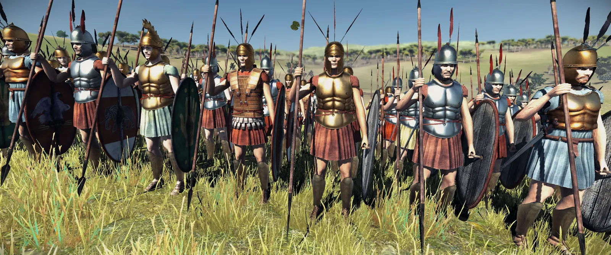
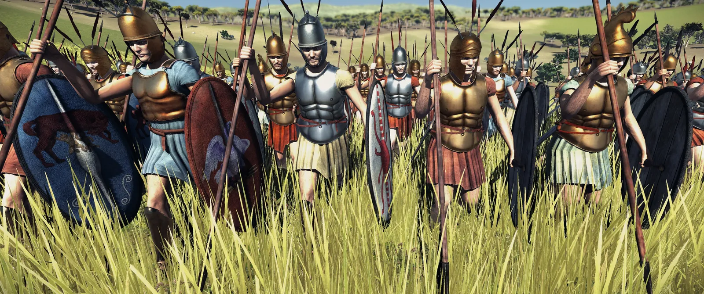
Lastly, the equites. Polybios remarked on their early fighting style the following way (VI.25): ”*The cavalry are now armed like that of Greece, but in old times they had no thorakes but fought in loincloths (perizoma), the result of which was that they were able to dismount and mount again at once with great dexterity and facility, but were exposed to great danger in close combat, as they were nearly naked.*” Further detailing their equipment, he characterizes their lances as insufficient, fragile and too bendy to take proper aim, while their bucklers of ox-hides peeled off and rotted in the rain, becoming useless. Thus, this is exactly the equipment this unit carries. The helmets we used for this purpose in is the very popular Montefortino helmet like for other Roman units, as well as Phrygian helmets, a typical helmet for Etruscan and Latin aristocrats (like the helmets depicted in the Tomb of Reliefs at Cerveteri or the wall painting in the Giglioli tomb, Tarquinia). We decided to preserve at least some of their dignity by not giving them loincloths but instead have them wear white tunics with purple-red thin stripes (angustus clavus) befitting their rank as equites/knights. As Polybios says, they were known for regularly dismounting for battle, so I guess, you can’t take the infantryman-spirit out of a Roman! (Liv. II.20.9; III.62.9; IV.38-39; VI.24.10; IX.39.6; VII.33.9; IX.22.9; IX.16.15)
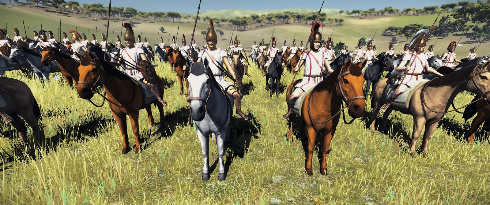
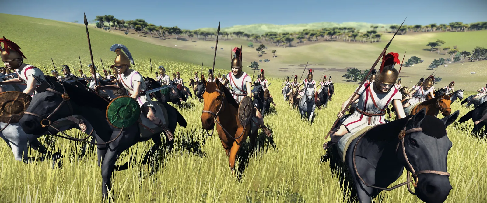
This concludes our Developer Diary for the Early Roman units! Of course, this won't be the last one, so stay tuned 😉